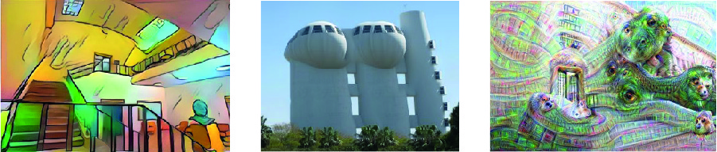

Weizmann Institute of Science20224171 Deep Learning for Computer Vision:Fundamentals and Applications |
||
Winter 2021/2 |
||
|  | ||
Course Overview
This course covers the fundamentals of deep-learning based methodologies in area of computer vision. Topics include: core deep learning algorithms (e.g., convolutional neural networks, optimization, back-propagation), and recent advances in deep learning for various visual tasks. The course provides hands-on experience with deep learning for computer vision: implementing deep neural networks and their components from scratch, tackling real world tasks in computer vision by desigining, training, and debugging deep neural networks using leading mainly PyTorch.
Announcements
- We strongly encourage students to take "Introduction to Computer Vision" (20224011) in conjuction with this course.
- The course will be taught via Zoom - register to get the link.
- All course materials will be made available here.
- Make sure you have completed all the prerequisites.
Course Information

Teaching Assistants
Please use the course Moodle page for all communication with the teaching staff.
Lectures and tutorials time
Lectures: 9:15-11:15 on Mondays
Tutorials: 9:15-10:15 on Thursdays
Office Hours
Upon requestGrading Policy
Assignments: 60%, Final project: 40%Note that different assignments might have different cntribution to the overall grade.
Previous semesters
Spring 2021.
The template of this website is based on CSAIL MIT's Advanced Computer Vision course